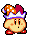

Home
Masahiro Sakurai's creation Kirby Super Star is a source of nostalgia for many of us.
So — here's all of Kirby's ablities from the beloved collection of 8 games!
My personal favorite is Beam because:

It looks neat!
It's fun to use!
It's easy to get!
Psst... This is one of the best Kirby songs!
Unforunately your browser does not support this audio.
Click on an ability to jump to it!
All Sprites provided by:
Sprites-Unlimited
WiKirby
Return to Dreamland
02/02/2020 Added Home and About page. Created introduction paragraph. Provided sprite sources. Created changelog.
02/20/2020 Added each ability's icon sprite into a table.
03/16/2020 Improved page layout. Giving the body a width and resizing multiple elements to look nicer.
03/17/2020 Added Gradients, background image, audio player, and smaller edited text colors.
Back To Top